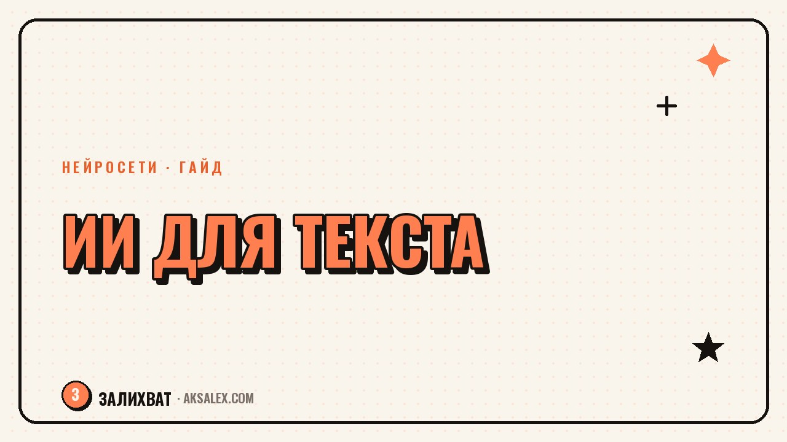

Нейросети для работы с текстом: написание и редактура

Письмо, отчёт, пост в соцсети или ответ клиенту - в течение дня почти каждый пишет тексты, не будучи копирайтером. Нейросети для работы с текстом закрывают три разные задачи: написать с нуля, переписать чужой черновик и вычитать готовый текст на ошибки. Разберём, какой инструмент под какую задачу подходит и где нейросеть скорее навредит, чем поможет.
Три разные задачи, а не одна
Часто человек открывает нейросеть с запросом 'напиши текст' и получает общий, безликий результат. Причина в том, что 'работа с текстом' на деле распадается на разные операции: генерация с нуля по идее, редактура уже написанного и корректура - проверка орфографии, пунктуации и стиля. Каждая задача требует своего подхода к промпту и своего инструмента.
Если смешать все три задачи в один запрос, результат выходит средним по качеству везде. Гораздо эффективнее сначала набросать структуру самому, затем отдать нейросети редактуру формулировок, а в конце прогнать текст через отдельную проверку грамотности.
Нейросеть хорошо пишет то, что уже умеет сформулировать человек. Она плохой источник идей, но отличный редактор для чужих идей.
Написание с нуля: когда это работает
Генерация текста с нуля подходит для шаблонных форматов: поздравление, объявление, короткое описание товара, письмо с типовой структурой. Чем более стандартна задача, тем лучше справляется нейросеть - она обучена на тысячах похожих текстов и знает привычную структуру жанра.
А вот с уникальным опытом, личной историей или сложной аргументацией нейросеть справляется хуже: она либо выдумывает детали, либо пишет обобщённо. В таких случаях лучше самому надиктовать или набросать ключевые мысли, а нейросети отдать только сборку и структурирование.
Редактура: главная сила текстовых нейросетей
Редактура - задача, где нейросети действительно экономят время. Она видит длинное предложение и предлагает разбить его на два, находит повторы одного слова в соседних абзацах, помогает сократить канцелярит. Это механическая работа, которую человеку делать скучно и долго, а нейросеть справляется за секунды.
Как правильно просить редактуру
- Указывай цель текста и аудиторию - для соцсетей и для делового письма правки разные
- Проси конкретные правки: 'сократи вдвое', 'убери канцелярит', 'сделай короче предложения' - вместо общего 'сделай лучше'
- Сравнивай варианты до и после, а не заменяй текст вслепую
- Проверяй, не потерялся ли смысл при сокращении - нейросеть иногда режет важные детали ради краткости
Отдельно стоит проверять факты и цифры после редактуры: нейросеть может незаметно поменять формулировку так, что смысл слегка исказится, особенно в технических или юридических текстах.
Вычитка: последний рубеж перед публикацией
Проверка орфографии и пунктуации - самая безопасная задача для нейросети, здесь риск ошибки минимален. Полезно прогонять через отдельный инструмент вычитки даже текст, который уже редактировала нейросеть: генеративные модели иногда сами допускают опечатки или расставляют запятые нестандартно.
Для русского языка отдельная вычитка особенно важна, потому что правила пунктуации сложнее, чем в английском, а обучающие данные многих моделей смещены в сторону английского текста.
Сравнение инструментов по задачам
Вот как распределяются задачи между популярными инструментами на практике.
| Задача | Что подходит | Сильная сторона | Слабое место |
|---|---|---|---|
| Написание с нуля | Общий чат-бот с промптом | Быстрая структура черновика | Обобщённость, риск выдумать факты |
| Редактура и сокращение | Тот же чат-бот с ролью редактора | Убирает воду и канцелярит | Может потерять важные детали |
| Проверка грамотности | Отдельный сервис проверки орфографии | Точность по правилам языка | Не видит смысловые ошибки |
| Подбор синонимов и стиля | Встроенные функции текстовых редакторов | Быстро, без лишних шагов | Ограниченный набор вариантов |
Частые ошибки при работе с текстовыми нейросетями
Первая ошибка - публиковать текст без чтения вслух. Нейросеть не слышит ритм фразы, и гладкий на вид текст может звучать неестественно при озвучке. Вторая ошибка - просить нейросеть придумать статистику или цитату: она может сгенерировать правдоподобную, но несуществующую цифру.
Третья ошибка - терять свой голос. Если полностью довериться нейросети, тексты разных авторов начинают звучать одинаково. Лучший результат получается, когда нейросеть берёт на себя рутину, а человек оставляет за собой формулировки, которые делают текст узнаваемым.
Частые вопросы
Какая нейросеть лучше пишет тексты на русском языке?
Для связного русского текста лучше всего подходят современные крупные языковые модели общего назначения - они точнее держат грамматику и стиль, чем узкоспециализированные генераторы. Конкретный выбор зависит от жанра текста и бюджета.
Может ли нейросеть полностью заменить редактора текста?
Для механической правки - сокращения, устранения повторов, проверки грамотности - да, почти полностью. Для смысловой редактуры, работы со стилем автора и проверки фактов человеческий редактор пока точнее.
Как проверить текст на ошибки после нейросети?
Прогони текст через отдельный сервис проверки орфографии и пунктуации, а не через ту же нейросеть, что писала текст. Так проще поймать ошибки, которые модель сама за собой не видит.
Не выдаст ли нейросеть чужой текст как свой при написании?
Современные модели генерируют новый текст, а не копируют существующий дословно, но иногда воспроизводят типовые обороты и штампы. Уникальность стоит проверять через сервисы вроде text.ru перед публикацией.
Стоит ли использовать нейросеть для деловой переписки?
Да, для типовых писем это экономит время - нейросеть быстро соберёт вежливую структуру. Но важные письма с конкретными договорённостями лучше перечитать самому и убедиться, что цифры и факты не исказились.
Раз тема оказалась полезной, вот что почитать следующим. Какие бесплатные нейросети реально делают презентации на русском и где начинаются платные лимиты.
Читать статью →а не вручную